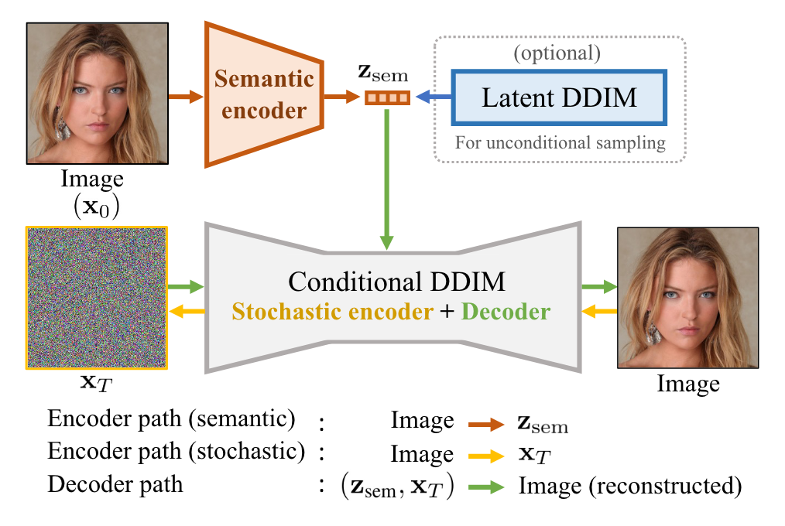
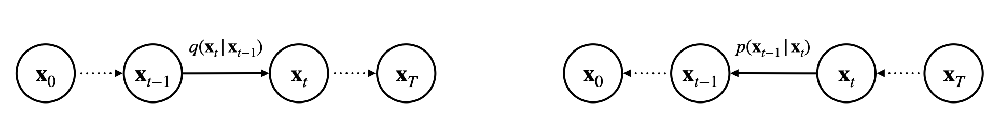
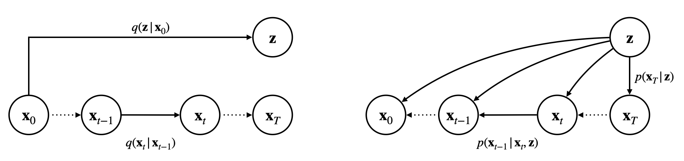
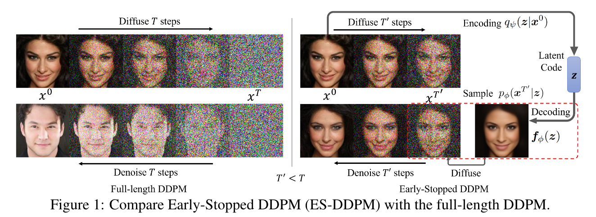
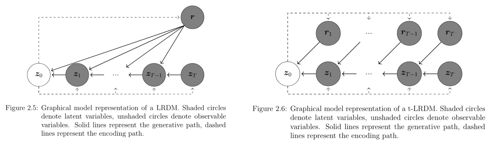
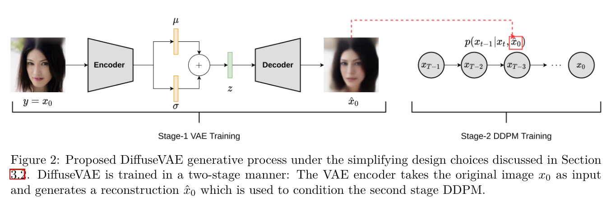
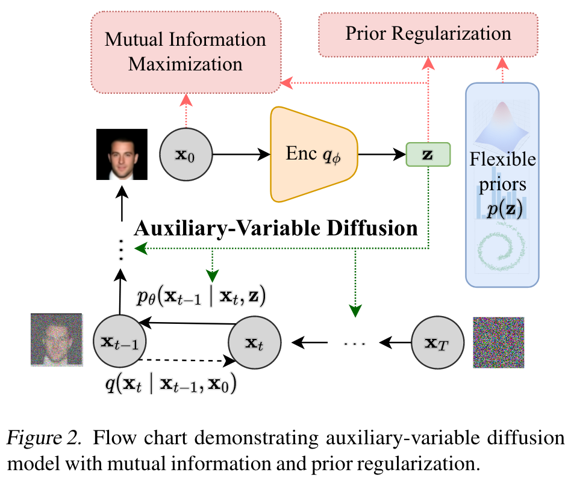

Diffusion+VAE
近期有几篇工作不约而同地都尝试了结合 Diffusion Models 与 VAE，尽管它们的动机并不相同。本文首先以一个结合 Diffusion 与 AE 的工作为引入，然后推导 Diffusion + VAE 的基本框架，再在这个基本框架下分别介绍相关的工作。
Diffusion + AE
在与 VAE 结合之前，论文[1]提出了 Diffusion Autoencoders，结合了 Diffusion 与 AE. 作者的动机是为扩散模型寻找一个有语义的隐空间，因为即便是像 DDIM 那样的确定性采样过程，其“隐空间”，即 \(\mathbf x_T\) 所在空间也并不理想，典型表现就是 DDIM 的插值结果并不是平滑变化的。Diffusion Autoencoders 希望构造一个像 GANs 和 VAEs 一样方便操纵的隐空间，能够平滑地插值、控制语义和编辑图像属性。为此，作者设计了如下架构：

其中，Semantic encoder 是一个卷积编码器，目的是提取输入图像的语义特征 \(z_\text{sem}\)；Conditional DDIM 是以 \(z_\text{sem}\) 为条件（通过 AdaGN 融入）的扩散模型，可以把 \(\mathbf x_0\to\mathbf x_T\) 过程看作“编码器”，\(\mathbf x_T\to\mathbf x_0\) 过程看作“解码器”；Latent DDIM 稍后再做解释。在这个架构下，\(z_\text{sem}\) 和 \(\mathbf x_T\) 共同形成了输入图像的隐空间。前者编码语义信息，让我们能够操纵生成图像的各种属性（如人的性别、年龄、微笑）；后者编码了 \(z_\text{sem}\) 遗留的其他信息，往往是一些随机细节。二者共同作用，既有扩散模型能够几乎完美地重建输入图像的优势，又得到了 high-level 的语义表征 \(z_\text{sem}\) 供下游任务的使用。当然，我们并没有显式地要求模型把语义编码在 \(z_\text{sem}\) 而不是 \(\mathbf x_T\) 之中，但实验发现——如果固定 \(z_\text{sem}\) 不变，随机采样 \(\mathbf x_T\)，那么生成的结果也大体不变，只有细节改变——这证明了确实是 \(z_\text{sem}\) 编码图像语义、\(\mathbf x_T\) 编码随机细节，符合我们的预期。
为了支持无条件生成，我们需要对 \(z_\text{sem}\) 的分布进行建模，这就是 Latent DDIM 的用途。当然，任何生成模型都可以用来建模 \(z_\text{sem}\)，只是作者觉得扩散模型更好罢了。
Diffusion + VAE
DDPM 回顾

如上图所示，DDPM 将前向过程和逆向过程都设计为了马尔可夫链的形式： \[ q(\mathbf x_{1:T}\vert\mathbf x_0)=\prod_{t=1}^{T}q(\mathbf x_t\vert\mathbf x_{t-1})\quad\quad p(\mathbf x_{0:T})=p(\mathbf x_T)\prod_{t=1}^{T}p(\mathbf x_{t-1}\vert\mathbf x_t) \] 于是 ELBO 可按如下方式推导： \[ \begin{align} \text{ELBO}(\mathbf x_0)&=\mathbb E_{q(\mathbf x_{1:T}\vert\mathbf x_0)}\left[\log\frac{p(\mathbf x_{0:T})}{q(\mathbf x_{1:T}\vert\mathbf x_0)}\right]\\ &=\mathbb E_{q(\mathbf x_{1:T}\vert\mathbf x_0)}\left[\log\frac{p(\mathbf x_T)\prod_{t=1}^{T}p(\mathbf x_{t-1}\vert\mathbf x_t)}{\prod_{t=1}^{T}q(\mathbf x_t\vert\mathbf x_{t-1})}\right]\\ &=\mathbb E_{q(\mathbf x_{1:T}\vert\mathbf x_0)}\left[\log\frac{p(\mathbf x_T)\prod_{t=1}^{T}p(\mathbf x_{t-1}\vert\mathbf x_t)}{q(\mathbf x_1\vert\mathbf x_0)\prod_{t=2}^{T}q(\mathbf x_t\vert\mathbf x_{t-1},\mathbf x_0)}\right]\\ &=\mathbb E_{q(\mathbf x_{1:T}\vert\mathbf x_0)}\left[\log\frac{p(\mathbf x_T)\prod_{t=1}^{T}p(\mathbf x_{t-1}\vert\mathbf x_t)}{q(\mathbf x_1\vert\mathbf x_0)\prod_{t=2}^{T}\frac{q(\mathbf x_t\vert\mathbf x_0)q(\mathbf x_{t-1}\vert\mathbf x_t,\mathbf x_0)}{q(\mathbf x_{t-1}\vert\mathbf x_0)}}\right]\\ &=\mathbb E_{q(\mathbf x_{1:T}\vert\mathbf x_0)}\left[\log\frac{p(\mathbf x_T)\prod_{t=1}^{T}p(\mathbf x_{t-1}\vert\mathbf x_t)}{q(\mathbf x_T\vert\mathbf x_0)\prod_{t=2}^{T}q(\mathbf x_{t-1}\vert\mathbf x_t,\mathbf x_0)}\right]\\ &=\mathbb E_{q(\mathbf x_{1:T}\vert\mathbf x_0)}\left[\log p(\mathbf x_0\vert\mathbf x_1)\right]+\mathbb E_{q(\mathbf x_{1:T}\vert\mathbf x_0)}\left[\log\frac{p(\mathbf x_T)}{q(\mathbf x_T\vert\mathbf x_0)}\right]+\sum_{t=2}^T\mathbb E_{q(\mathbf x_{1:T}\vert\mathbf x_0)}\left[\log\frac{p(\mathbf x_{t-1}\vert\mathbf x_t)}{q(\mathbf x_{t-1}\vert\mathbf x_t,\mathbf x_0)}\right]\\ &=\mathbb E_{q(\mathbf x_{1}\vert\mathbf x_0)}\left[\log p(\mathbf x_0\vert\mathbf x_1)\right]+\mathbb E_{q(\mathbf x_{T}\vert\mathbf x_0)}\left[\log\frac{p(\mathbf x_T)}{q(\mathbf x_T\vert\mathbf x_0)}\right]+\sum_{t=2}^T\mathbb E_{q(\mathbf x_t\vert\mathbf x_0)}\mathbb E_{q(\mathbf x_{t-1}\vert\mathbf x_t,\mathbf x_0)}\left[\log\frac{p(\mathbf x_{t-1}\vert\mathbf x_t)}{q(\mathbf x_{t-1}\vert\mathbf x_t,\mathbf x_0)}\right]\\ &=\underbrace{\mathbb E_{q(\mathbf x_{1}\vert\mathbf x_0)}\left[\log p(\mathbf x_0\vert\mathbf x_1)\right]}_\text{reconstruction term}-\underbrace{\text{KL}(q(\mathbf x_T\vert\mathbf x_0)\Vert p(\mathbf x_T))}_\text{regularization term}-\sum_{t=2}^T\mathbb E_{q(\mathbf x_t\vert\mathbf x_0)}\underbrace{\left[\text{KL}(q(\mathbf x_{t-1}\vert\mathbf x_t,\mathbf x_0)\Vert p(\mathbf x_{t-1}\vert\mathbf x_t))\right]}_\text{denoising matching terms}\\ \end{align} \] 可以看见，ELBO 由三项构成：重构项、正则项和去噪匹配项。DDPM 通过巧妙地设计 \(q\)，使得 \(q(\mathbf x_t\vert\mathbf x_0)\) 和 \(q(\mathbf x_{t-1}\vert\mathbf x_t,\mathbf x_0)\) 都可以解析地写作正态分布的形式，并取 \(p\) 为类似形式，那么上述重构项和去噪匹配项都能写作 MSE Loss，而正则项在 \(T\) 充分大时趋近于 \(0\). 在进一步简化和重参数化后，就可以得到最终的损失函数（具体细节此处略过）： \[ L_\text{simple}(\theta)=\mathbb E_{t,\mathbf x_0,\epsilon}\left[\left\Vert\epsilon-\epsilon_\theta\left(\sqrt{\bar\alpha_t}\mathbf x_0+\sqrt{1-\bar\alpha_t}\epsilon,t\right)\right\Vert^2\right] \]
基本框架
受到 Diffusion AE 的启发，我们在 DDPM 的概率图中新增一个隐变量 \(\mathbf z\)，并且让逆向过程的每一步都以 \(\mathbf z\) 为条件输入，如下图所示：
 \[ \begin{align} &q(\mathbf x_{1:T},\mathbf z\vert\mathbf x_0)=q(\mathbf z\vert\mathbf x_0)q(\mathbf x_{1:T}\vert\mathbf x_0)=q(\mathbf z\vert\mathbf x_0)\prod_{t=1}^{T}q(\mathbf x_t\vert\mathbf x_{t-1})\label{inference}\tag{1}\\ &p(\mathbf x_{0:T},\mathbf z)=p(\mathbf z)p(\mathbf x_{0:T}\vert\mathbf z)=p(\mathbf z)p(\mathbf x_T\vert\mathbf z)\prod_{t=1}^T p(\mathbf x_{t-1}\vert\mathbf x_t,\mathbf z)\label{generative}\tag{2} \end{align} \] 那么 ELBO 可以写作： \[ \begin{align} \text{ELBO}(\mathbf x_0)&=\mathbb E_{q(\mathbf x_{1:T},\mathbf z\vert\mathbf x_0)}\left[\log\frac{p(\mathbf x_{0:T},\mathbf z)}{q(\mathbf x_{1:T},\mathbf z\vert\mathbf x_0)}\right]\\ &=\mathbb E_{q(\mathbf x_{1:T},\mathbf z\vert\mathbf x_0)}\left[\log\frac{p(\mathbf z)p(\mathbf x_{0:T}\vert\mathbf z)}{q(\mathbf z\vert\mathbf x_0)q(\mathbf x_{1:T}\vert\mathbf x_0)}\right]\\ &=\mathbb E_{q(\mathbf z\vert\mathbf x_0)}\left[\log\frac{p(\mathbf z)}{q(\mathbf z\vert\mathbf x_0)}\right]+\mathbb E_{q(\mathbf x_{1:T},\mathbf z\vert\mathbf x_0)}\left[\log\frac{p(\mathbf x_{0:T}\vert\mathbf z)}{q(\mathbf x_{1:T}\vert\mathbf x_0)}\right]\\ &=-\underbrace{\text{KL}(q(\mathbf z\vert\mathbf x_0)\Vert p(\mathbf z))}_\text{VAE regularization term}+\mathbb E_{q(\mathbf z\vert\mathbf x_0)}\underbrace{\left[\mathbb E_{q(\mathbf x_{1:T}\vert\mathbf x_0)}\left[\log\frac{p(\mathbf x_{0:T}\vert\mathbf z)}{q(\mathbf x_{1:T}\vert\mathbf x_0)}\right]\right]}_\text{almost the same as DDPM} \end{align} \] 其中第二项的推导过程与 DDPM 几乎没有区别，只需要把所有的 \(p\) 都加上 \(\mathbf z\) 作为条件即可，而多出来的第一项正好是 VAE 的正则项。因此总的来说，现在的优化目标由四项构成：
VAE 正则项： \[ -\text{KL}(q(\mathbf z\vert\mathbf x_0)\Vert p(\mathbf z)))\label{vae-reg}\tag{3} \]
VAE 重构项 / Diffusion 正则项： \[ -\mathbb E_{q(\mathbf z\vert\mathbf x_0)}\left[\text{KL}(q(\mathbf x_T\vert\mathbf x_0)\Vert p(\mathbf x_T\vert\mathbf z))\right]\label{diff-reg}\tag{4} \]
注：从 VAE 的角度看，\(q(\mathbf x_T\vert\mathbf x_0)\) 是 \(\mathbf x_T\) 的真实分布，\(p(\mathbf x_T\vert\mathbf z)\) 是预测的分布，因此相当于重构项；而从 Diffusion 的角度看，\(p(\mathbf x_T\vert\mathbf z)\) 是先验分布，\(q(\mathbf x_T\vert\mathbf x_0)\) 是后验分布，因此是正则项。
Diffusion 重构项： \[ \mathbb E_{q(\mathbf z\vert\mathbf x_0)}\mathbb E_{q(\mathbf x_{1}\vert\mathbf x_0)}\left[\log p(\mathbf x_0\vert\mathbf x_1,\mathbf z)\right]\label{diff-rec}\tag{5} \]
Diffusion 去噪匹配项： \[ -\sum_{t=2}^T\mathbb E_{q(\mathbf z\vert\mathbf x_0)}\mathbb E_{q(\mathbf x_t\vert\mathbf x_0)}\left[\text{KL}(q(\mathbf x_{t-1}\vert\mathbf x_t,\mathbf x_0)\Vert p(\mathbf x_{t-1}\vert\mathbf x_t,\mathbf z))\right]\label{diff-match}\tag{6} \]
下面我们介绍几个相关的工作。由于它们有着不同的动机，因此对上述基本框架或多或少进行了一些修改，我们可以着重关注修改的地方。
ES-DDPM
ES-DDPM[2] 的研究动机是希望加速扩散模型的训练和采样。不同于 improved DDPM 和 DDIM 在原马尔可夫链上跳跃式前进的加速采样方法，ES-DDPM 直接对加噪过程做一个截断（Early-Stop），不把原图像加噪到标准正态，如此不仅能加速采样，也能加速训练。这样做带来的一个问题是如何对非正态的 \(\mathbf x_{T'}\) 的分布进行建模。一个自然的想法就是用另一个生成模型，比如 VAE，来建模 \(\mathbf x_{T'}\). 因此，ES-DDPM 的整体框架如下图所示：

可以看见，这与我们画的基本框架非常相像。一个略有不同的点在于，作者为了能够分别独自训练 VAE 和 DDPM，规定 \(\mathbf z\) 与 \(p(\mathbf x_{t-1}\vert\mathbf x_t)\) 二者独立： \[ p(\mathbf x_{t-1}\vert\mathbf x_t,\mathbf z)=p(\mathbf x_{t-1}\vert\mathbf x_t),\quad t=1,2,\ldots,T \] 如此一来，\(\eqref{diff-rec}\) 式和 \(\eqref{diff-match}\) 式就与原本的 DDPM 彻底一样了，只是训练的时间步少一些。
对于 \(\eqref{diff-reg}\) 式，注意现在 \(\mathbf x_{T'}\) 不是标准正态随机变量，所以并不为 \(0\)，因此我们需要为 \(p(\mathbf x_T\vert\mathbf z)\) 找一个便于计算的参数化形式。考虑到 DDPM 将 \(q(\mathbf x_{T'}\vert\mathbf x_0)\) 设计为了如下形式： \[
q(\mathbf x_{T'}\vert\mathbf x_0)=\mathcal N\left(\mathbf x_{T'};\sqrt{\bar\alpha_t}\mathbf x_0,(1-\bar\alpha_t)\mathbf I\right)
\] 自然想到将 \(p(\mathbf x_{T'}\vert\mathbf z)\) 设计为类似的形式： \[
p(\mathbf x_{T'}\vert\mathbf z)=\mathcal N\left(\mathbf x_{T'};\sqrt{\bar\alpha_t}f_\phi(\mathbf z),(1-\bar\alpha_t)\mathbf I\right)
\] 这个 \(f_\phi\) 就相当于是 VAE 的解码器。那么很容易推出，\(\eqref{diff-reg}\) 式的 KL 散度可以写作： \[
\text{KL}(q(\mathbf x_{T'}\vert\mathbf x_0)\Vert p(\mathbf x_{T'}\vert\mathbf z))=C_1\left\Vert\mathbf x_0-f_\phi(\mathbf z)\right\Vert^2+C_2
\] 直观来看就是用 \(\mathbf z\) 去预测 \(\mathbf x_0\). 而 \(\eqref{vae-reg}\) 式就是普通的 VAE 正则项，取先验 \(p(\mathbf z)\) 为标准正态即可。那么现在 \(\eqref{vae-reg},\eqref{diff-reg},\eqref{diff-rec},\eqref{diff-match}\) 式都被我们解析地写了出来，就可以开始愉快地训练了。
训练结束后，我们依照 \(\eqref{generative}\) 式采样即可：首先从标准正态中采样 \(\mathbf z\)，然后计算 \(f_\phi(\mathbf z)\)，再从 \(p(\mathbf x_{T'}\vert\mathbf z)\) 中采样 \(\mathbf x_{T'}\)，最后根据 \(p(\mathbf x_{t-1}\vert\mathbf x_t)\) 去噪。注意到采样过程并不需要 VAE 的编码器 \(q(\mathbf z\vert\mathbf x_0)\) 的参与，只需要解码器 \(f_\phi(\mathbf z)\)，因此作者还提出，可以把 VAE 换做 GAN，并且实验发现性能更好。事实上，无论是 VAE 还是 GAN，ES-DDPM 干的事情可以简单地总结为：用一个生成模型（VAE / GAN）生成一张图像，然后进行一定程度地加噪，再用扩散模型去噪——本质上就是用 SDEdit 的方式来改良 VAE/GAN 生成的图像。
LRDM
LRDM[3] 其实是海德堡大学的一篇硕士论文，其动机与本文开头的 Diffusion Autoencoders 一致——为扩散模型寻找一个有语义的隐空间。考虑到 VAE 拥有这样的隐空间，因此作者考虑将 VAE 与 Diffusion 相结合，整体框架如下左图所示：

可以看见，除了变量名与本文略有出入以外，这与我们的基本框架几乎完全一致。唯一的一个小区别在于没有从 \(\mathbf z\) 到 \(\mathbf x_T\) 的线，但这一点无关紧要，因为在 LRDM 中 \(T\) 是充分大的，\(q(\mathbf x_T\vert\mathbf x_0)\) 趋近于标准正态，所以可以直接取 \(p(\mathbf x_T\vert\mathbf z)\) 为标准正态，自然有没有 \(\mathbf z\) 的条件都无所谓了。换句话说，\(\eqref{diff-reg}\) 式就像原始的 DDPM 一样变成了 \(0\)，这一点与 ES-DDPM 形成了鲜明对比（事实上本节涉及的方法中除了 ES-DDPM，\(\eqref{diff-reg}\) 式都退化为 \(0\)）。
作者还做了进一步的扩展，考虑了给不同时间步以不同的隐变量的情形，如上右图所示。具体实现上可以通过给编码器以时间步 \(t\) 作为条件来完成。相关推导应该也大差不差，这里就不赘述了。
DiffuseVAE
DiffuseVAE[4] 的想法很直接：首先用 VAE 生成图像 \(\hat{\mathbf x}_0\)，然后将其作为条件给到扩散模型来精细化，整体框架如下所示：

乍一看这好像与我们的基本框架不太相像，但仔细一瞧其实是类似的，只不过由于 DiffuseVAE 是分阶段训练而非联合训练的，在训练扩散模型之前已经训练好 VAE 了，所以可以把条件从隐变量 \(\mathbf z\) 换成 VAE 重构的图像 \(\hat{\mathbf x}_0\)，即： \[ p(\mathbf x_{t-1}\vert\mathbf x_t,\mathbf z)=p(\mathbf x_{t-1}\vert\mathbf x_t,\hat{\mathbf x}_0),\quad t=1,2,\ldots,T \] 相当于训练一个条件扩散模型做超分（类似于 SR3）。也就是说，由于 DiffuseVAE 选择了分阶段训练，我们原本统一的框架被拆分成了两个已有工作的拼接，多少有点遗憾。甚至作者也在论文的 limitation 一节说端到端的联合训练是值得探索的。不过有趣的是，我们框架中的前向过程是与条件独立的（即 \(\eqref{inference}\) 式），而本文的作者还提出了一种带条件的前向过程形式化： \[ \begin{align} &q(\mathbf x_1\vert\mathbf x_0,\hat{\mathbf x}_0)=\mathcal N\left(\mathbf x_1;\sqrt{1-\beta_1}\mathbf x_0+\hat{\mathbf x}_0,\beta_1\mathbf I\right)\\ &q(\mathbf x_t\vert\mathbf x_{t-1},\hat{\mathbf x}_0)=\mathcal N\left(\mathbf x_t;\sqrt{1-\beta_t}\mathbf x_{t-1}+(1-\sqrt{1-\beta_t})\hat{\mathbf x}_0,\beta_t\mathbf I\right) \end{align} \] 在这样的形式化下，可以推出： \[ q(\mathbf x_t\vert\mathbf x_0,\hat{\mathbf x}_0)=\mathcal N\left(\mathbf x_t;\sqrt{\bar\alpha_t}\mathbf x_0+\hat{\mathbf x}_0,(1-\bar\alpha_t)\mathbf I\right) \] 因此，当 \(T\to\infty\) 时，\(q(\mathbf x_T\vert\mathbf x_0,\hat{\mathbf x}_0)\to\mathcal N(\mathbf x_T;\hat{\mathbf x}_0,\mathbf I)\)，也就是说，模型不再是把任何图像都加噪到标准正态分布，而是加噪到以原图为中心的正态分布。当然，在这样的形式化下，原始 DDPM 中的相关公式都要重新推导，鉴于这已经偏离了本文的主题，就不再赘述了。
InfoDiffusion
InfoDiffusion[5] 的目的依然是寻找一个有语义的隐空间，整体框架如下图所示：

可见这就是在我们的基础框架上增加了两个正则项（红色框框），分别是：
Mutual Information Maximization：最大化隐变量 \(\mathbf z\) 与图像 \(\mathbf x_0\) 之间的互信息，用于避免模型忽略隐变量 \(\mathbf z\). \[ \text{MI}_{\mathbf x_0,\mathbf z}=\mathbb E_{q(\mathbf x_0,\mathbf z)}\left[\log\frac{q(\mathbf x_0,\mathbf z)}{q(\mathbf x_0)q(\mathbf z)}\right] \] 这个思想最早来自于著名的 InfoGAN，而后被用在了 InfoVAE 之中，所以现在用在 Diffusion 中也并不意外。
Prior Regularization：让 \(\mathbf z\) 的后验逼近一个可灵活选取的先验分布，防止后验坍塌。 \[ \mathcal R=\mathbf D(q(\mathbf z)\Vert p(\mathbf z)) \] 其中 \(\mathbf D\) 可以是任意一种散度。
那么总的优化目标就是： \[ \mathbb E_{q(\mathbf x_0)}[\text{ELBO}(\mathbf x_0)]+\zeta\cdot\text{MI}_{\mathbf x_0,\mathbf z}-\beta\cdot\mathcal R \] 其中 \(\zeta,\beta>0\) 是控制正则项大小的系数。
然而，这两个正则项都不能直接写出解析形式，需要进一步的推导。为此，我们首先重写 VAE 正则项（\(\eqref{vae-reg}\) 式）： \[ \begin{align} -\mathbb E_{q(\mathbf x_0)}\left[\text{KL}(q(\mathbf z\vert\mathbf x_0)\Vert p(\mathbf z)))\right] &=\mathbb E_{q(\mathbf x_0)}\mathbb E_{q(\mathbf z\vert\mathbf x_0)}\left[\log\frac{p(\mathbf z)}{q(\mathbf z\vert\mathbf x_0)}\right]\\ &=\mathbb E_{q(\mathbf x_0,\mathbf z)}\left[\log\left(\frac{p(\mathbf z)}{q(\mathbf z\vert\mathbf x_0)}\cdot\frac{q(\mathbf z)}{q(\mathbf z)}\right)\right]\\ &=\mathbb E_{q(\mathbf x_0,\mathbf z)}\left[\log\frac{p(\mathbf z)}{q(\mathbf z)}+\log\frac{q(\mathbf z)}{q(\mathbf z\vert\mathbf x_0)}\right]\\ &=-\text{KL}(q(\mathbf z)\Vert p(\mathbf z))-\text{MI}_{\mathbf x_0,\mathbf z} \end{align} \] 发现 VAE 正则项本身就由两部分组成：互信息 \(\text{MI}_{\mathbf x_0,\mathbf z}\) 与 \(\mathcal R\)（在取 \(\mathbf D\) 为 KL 散度的情况下），所以 InfoDiffusion 添加的两个正则项本质上是在对原本的 VAE 正则项的两个组成部分进行重新加权。我们首先解决互信息无法解析表达的问题，只需要反过来用 VAE 正则项和 \(\mathcal R\) 来替换掉互信息即可： \[ \begin{align} &-\mathbb E_{q(\mathbf x_0)}\left[\text{KL}(q(\mathbf z\vert\mathbf x_0)\Vert p(\mathbf z)))\right]+\zeta\cdot\text{MI}_{\mathbf x_0,\mathbf z}-\beta\cdot\mathcal R\\ =&-\mathbb E_{q(\mathbf x_0)}[\text{KL}(q(\mathbf z\vert\mathbf x_0)\Vert p(\mathbf z))]+\zeta\cdot\left(-\mathcal R+\mathbb E_{q(\mathbf x_0)}[\text{KL}(q(\mathbf z\vert\mathbf x_0)\Vert p(\mathbf z))]\right)-\beta\cdot\mathcal R\\ =&\ (\zeta-1)\mathbb E_{q(\mathbf x_0)}[\text{KL}(q(\mathbf z\vert\mathbf x_0)\Vert p(\mathbf z))]-(\zeta+\beta)\cdot\mathcal R \end{align} \] 最后把剩下的其他项（\(\eqref{diff-reg},\eqref{diff-rec},\eqref{diff-match}\) 式套上对 \(\mathbf x_0\) 求期望）加进来，就得到了最终的优化目标： \[ \begin{align} \mathcal L_I=\ &\mathbb E_{q(\mathbf z\vert\mathbf x_0)}\mathbb E_{q(\mathbf x_0,\mathbf x_1)}\left[\log p(\mathbf x_0\vert\mathbf x_1,\mathbf z)\right] -\mathbb E_{q(\mathbf x_0)}\left[\text{KL}(q(\mathbf x_T\vert\mathbf x_0)\Vert p(\mathbf x_T))\right]\\ &-\sum_{t=2}^T\mathbb E_{q(\mathbf x_0,\mathbf x_t)}\mathbb E_{q(\mathbf z\vert\mathbf x_0)}\left[\text{KL}(q(\mathbf x_{t-1}\vert\mathbf x_t,\mathbf x_0)\Vert p(\mathbf x_{t-1}\vert\mathbf x_t,\mathbf z))\right]\\ &-(\zeta+\beta)\cdot\text{KL}(q(\mathbf z)\Vert p(\mathbf z))-(1-\zeta)\mathbb E_{q(\mathbf x_0)}[\text{KL}(q(\mathbf z\vert\mathbf x_0)\Vert p(\mathbf z))] \end{align} \] 现在还有一个遗留问题就是 \(\mathcal R=\text{KL}(q(\mathbf z)\Vert p(\mathbf z))\) 依旧无法写出解析形式。为此，作者证明了，虽然上述推导建立在取 \(\mathcal R\) 中的散度 \(\mathbf D\) 为 KL 散度的情形下，但是直接把 KL 散度换成其他散度也是没问题的。最终作者选用 MMD (maximum mean discrepancy)： \[ \begin{align} \text{MMD}(q(\mathbf z)\Vert p(\mathbf z))&= \mathbb E_{\mathbf z,\mathbf z'\sim q(\mathbf z)}[k(\mathbf z,\mathbf z')]\\ &+\mathbb E_{\mathbf z,\mathbf z'\sim p(\mathbf z)}[k(\mathbf z,\mathbf z')]\\ &-2\mathbb E_{\mathbf z\sim q(\mathbf z),\mathbf z'\sim p(\mathbf z)}[k(\mathbf z,\mathbf z')] \end{align} \] 其中 \(k\) 是一个正定核函数，对 \(q(\mathbf z)\) 的期望通过采样 \(\{\mathbf x_0^{(i)}\}_{i=1}^N\sim q(\mathbf x_0)\) 的方式来近似。
事实上，InfoDiffusion 新加入的这两个正则项都是 InfoVAE[6] 提出的，感兴趣的读者可以参考 生成模型中的互信息一文。
References
- Preechakul, Konpat, Nattanat Chatthee, Suttisak Wizadwongsa, and Supasorn Suwajanakorn. Diffusion autoencoders: Toward a meaningful and decodable representation. In Proceedings of the IEEE/CVF Conference on Computer Vision and Pattern Recognition, pp. 10619-10629. 2022. ↩︎
- Lyu, Zhaoyang, Xudong Xu, Ceyuan Yang, Dahua Lin, and Bo Dai. Accelerating diffusion models via early stop of the diffusion process. arXiv preprint arXiv:2205.12524 (2022). ↩︎
- Traub, Jeremias. Representation Learning with Diffusion Models. arXiv preprint arXiv:2210.11058 (2022). ↩︎
- Pandey, Kushagra, Avideep Mukherjee, Piyush Rai, and Abhishek Kumar. Diffusevae: Efficient, controllable and high-fidelity generation from low-dimensional latents. arXiv preprint arXiv:2201.00308 (2022). ↩︎
- Wang, Yingheng, Yair Schiff, Aaron Gokaslan, Weishen Pan, Fei Wang, Christopher De Sa, and Volodymyr Kuleshov. InfoDiffusion: Representation Learning Using Information Maximizing Diffusion Models. arXiv preprint arXiv:2306.08757 (2023). ↩︎
- Zhao, Shengjia, Jiaming Song, and Stefano Ermon. Infovae: Information maximizing variational autoencoders. arXiv preprint arXiv:1706.02262 (2017). ↩︎